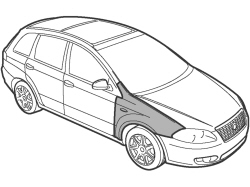
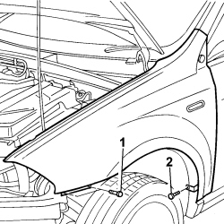
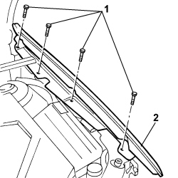

7210E18 R.R. FRONT WING
- Path
- Procedures > 72 PANELS AND FRAMES > 7210 REMOVING-REFITTING > 7210E EXTERNAL PARTS > 7210E18 R.R. FRONT WING
- Kind
- repair procedure (removal / refitting; the operation number is the code)
- Applies to
- all engines; all production periods
- Interactive page
- https://sloeber94.github.io/elrnDB-fCrm/en/#/194001241
Applies to: all engines; all production periods
 Removing
Removing
 Refitting
RefittingCheck that the components connected are not distorted by checking the bodyshell alignment measurements using suitable equipment (gauges, templates or jigs).
- Straighten the body as necessary.

Applies to: all engines; all production periods
1. Undo the wing front fixing bolts.
2. Undo the wing lower fixing bolt.

Applies to: all engines; all production periods
1. Undo the upper bolts fixing the wing.
2. Remove the wing from the vehicle.

Applies to: all engines; all production periods
Refitting
RemovingPosition the wing and screw in the upper fixing bolts without tightening.
- Align the wing checking the surrounding lines with the door and bonnet.
- Screw in the fixing bolts in the wheel arch and tighten.
- Tighten the upper fixing bolts.
Topics that link to this page (9)
- 7210A15 R.R. FRONT WING/HEADLAMP HOUSING CROSSMEMBER
- 7210A31 R R FRONT SHOCK ABSORBER ATTACHMENT DOME, (ONE) LH OR RH
- 7210A35 R.R. LOWER FRONT STRUT/SIDE PANEL (COMPLETE) (ONE) LEFT OR RIGHT
- 7210A40 R.R. LOWER FRONT STRUT/SIDE PANEL LEVEL 1 (PARTIAL) (ONE) LEFT OR RIGHT
- 7210A46 R R (COMPLETE) UPPER FRONT STRUT (ONE) LH OR RH
- 7210A56 R R BODY SIDE OUTER FRONT STIFFENER, (ONE) LH OR RH
- 7210A60 R.R. FRONT PILLAR
- 7210A61 R R FRONT PILLAR INNER COATING, (ONE) LH OR RH
- 7210E44 R.R. DOOR SILL RAIL OUTER TRIM